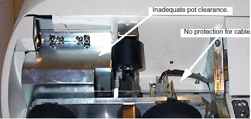

Illustration 5: New Encoder Cover: 2261675

Illustration 4: Old Encoder Cover

These issues, identified and addressed with a Six Sigma project, were resolved with a new cover as shown in Illustration 5.
Illustration 5: New Encoder Cover: 2261675
It is highly recommended that the field order and replace any of the old style covers present on installed base systems. These new covers were cut into forward production with the advent of the LCC table. All applicable systems should have this cover installed.